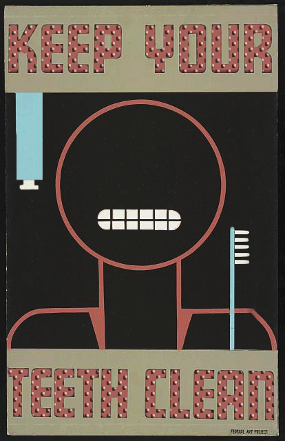
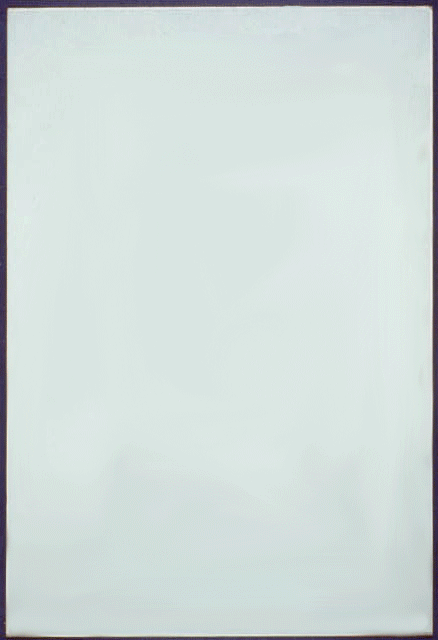
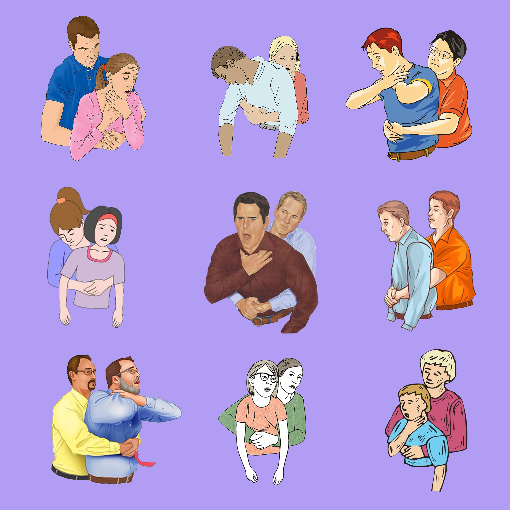
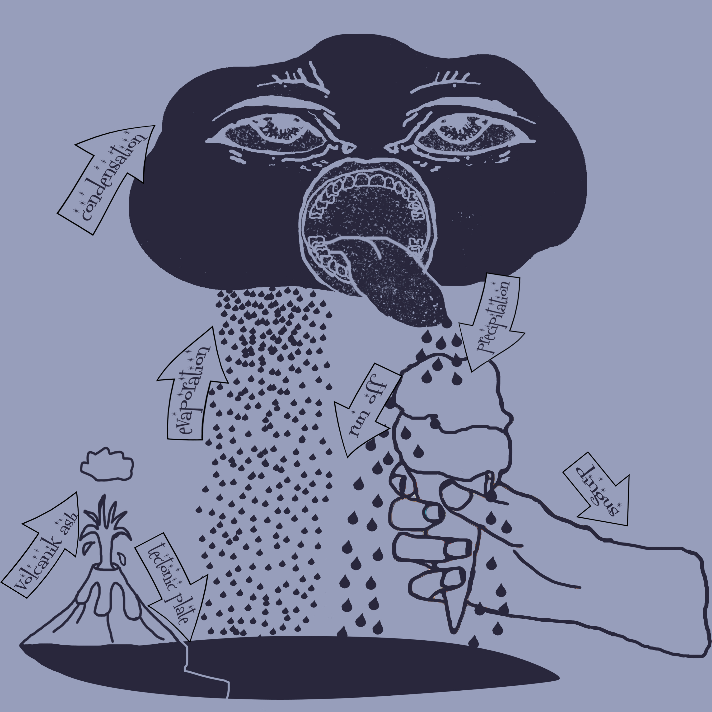
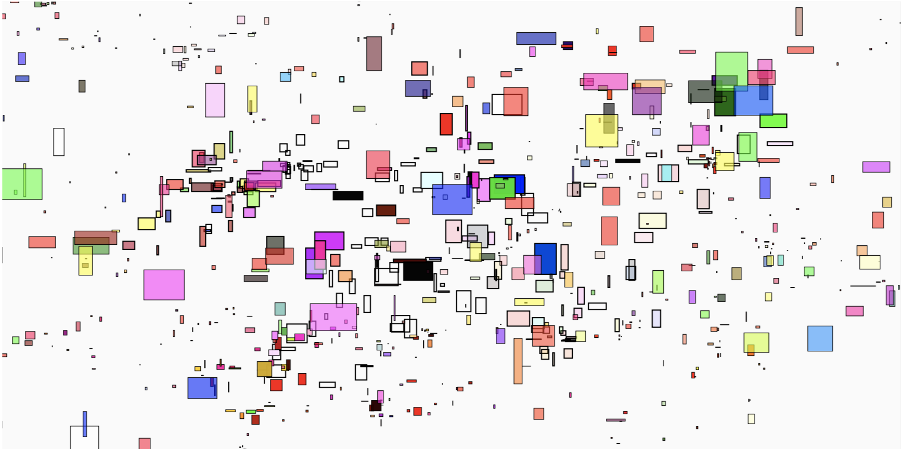
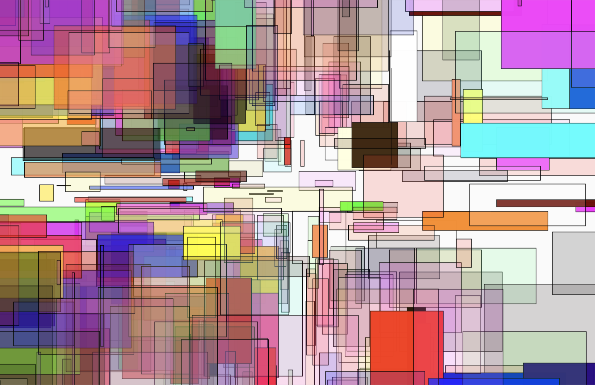
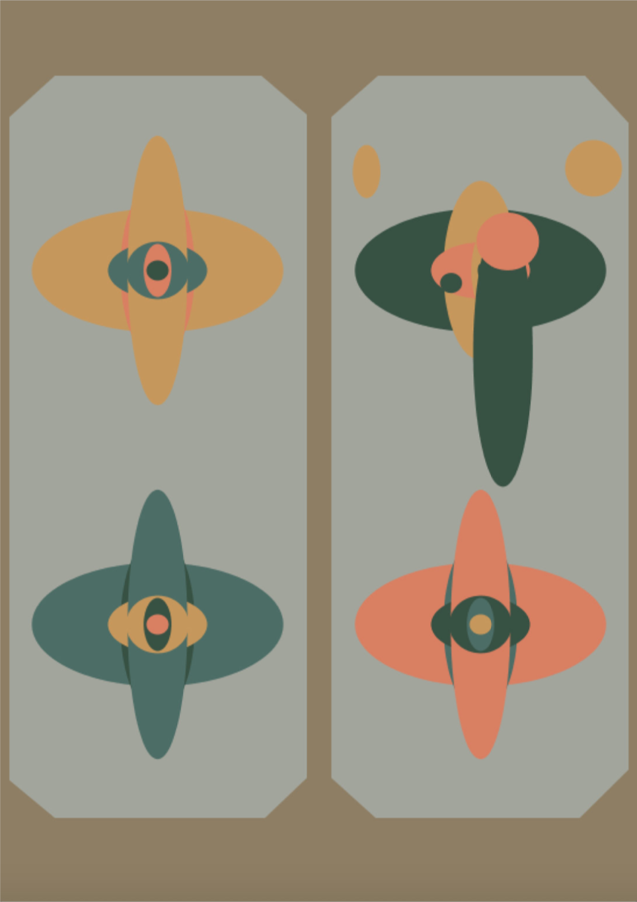
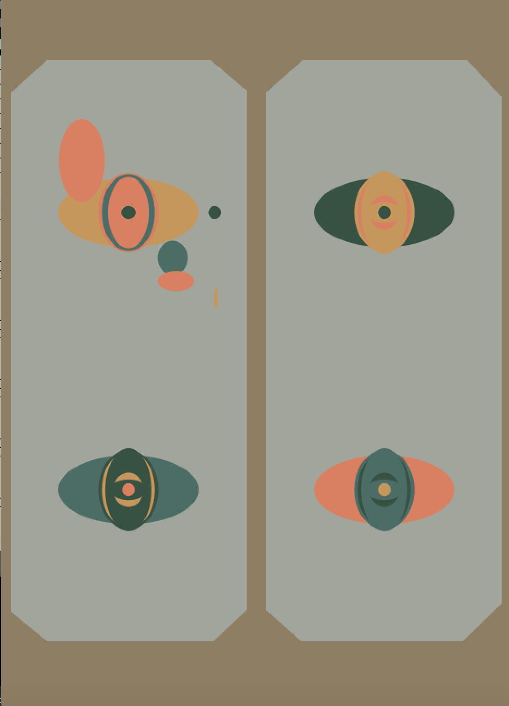
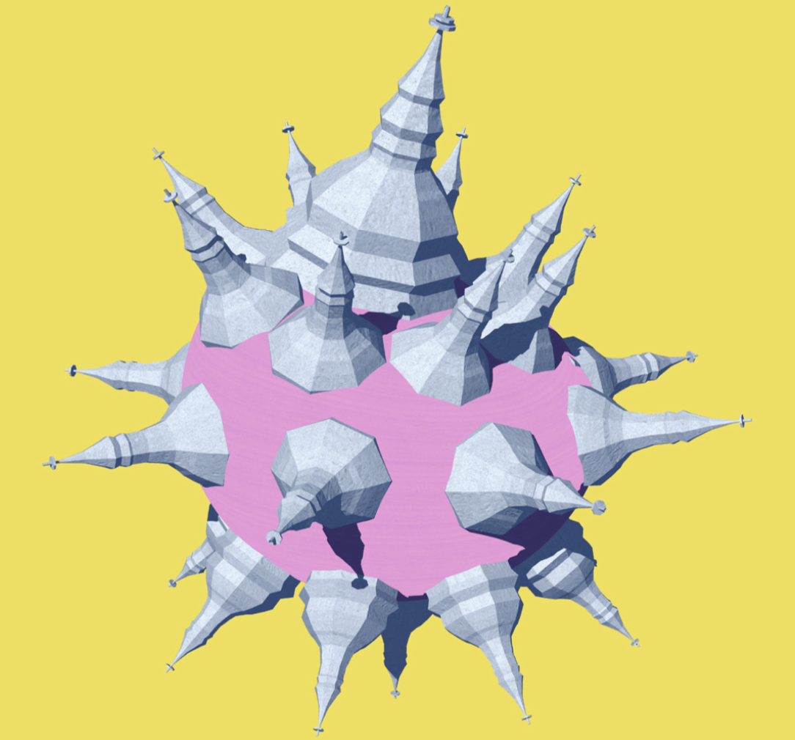

View the digital drawings, models, gifs, visual programs, and short videos
I have made. I like combining different tools and platforms for digital art making in
order to create graphics whose final destination is the web.




The above GIFS and images were created on Photoshop.
The animations about teeth and milk are re-worked GIFS from 1930s-1940s
Works Projects Administration (WPA) posters.
The still image of the cloud monster water cycle was screenprinted
onto various shirts and tote bags.


The video and images above were programmed in Processing and edited in Adobe Premiere.
I wrote object oriented code in Processing to make an interactive
drawing tool. I used that drawing tool to make a looping
video in support of Internet.Hotspot, a Chicago entertainment company.
CLICK HERE for the source code for this project.


These two images were generated in Processing. They are screenshots of
interactive remakes of
Josef Albers' color theory work.
When the viewer presses different keys,
the image changes and different frequency sin oscillators are generated.

The two images above were generated and rendered with Unity and Grashopper.
They are generative, recontextualized 3D models of St. Nicholas Ukrainian Catholic
Cathedral, located in the Ukrainian Village, Chicago, where I grew up.